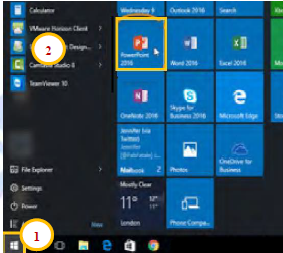
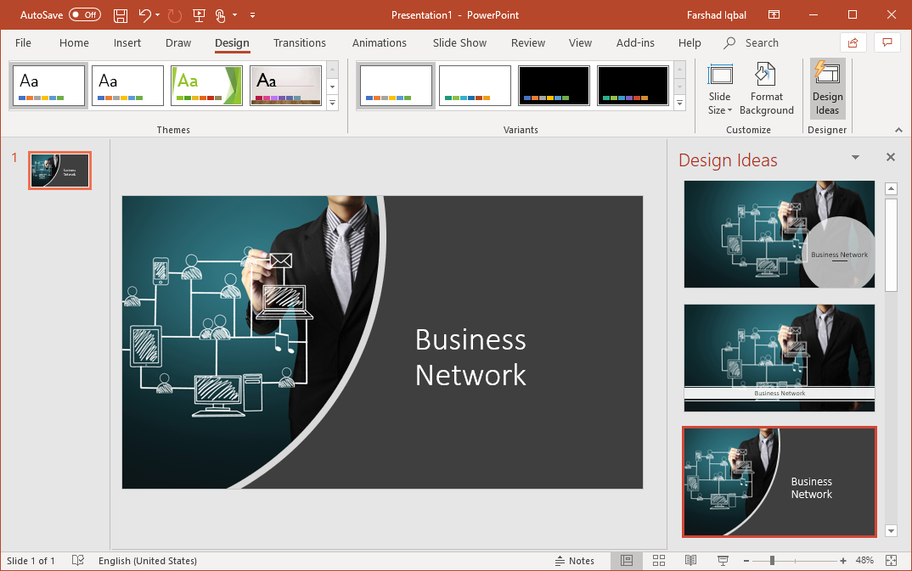
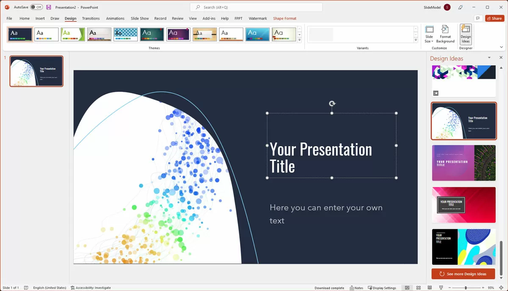
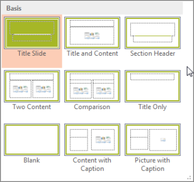
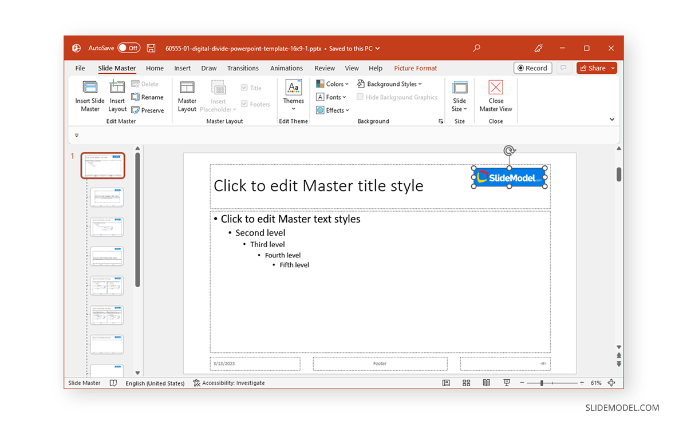
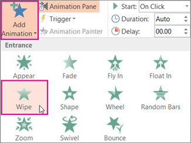
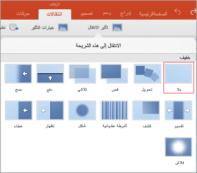

PowerPoint هو برنامج عرض تم إنشاؤه بواسطة روبرت جاسكينز ودنيس أوسنت في شركة برمجيات تدعي أصبح أحد مكونات مجموعة Office Offices، لمساعدة الناس على إنتاج عروض الجناية والمهنية؛ ثم أصبح أحد مكونات مجموعة Microsoft Office.
مقدمة عن PowerPoint

أهمية العرض التقديمي
بيع أو تسويق سلعة أو منتج أو خدمة
طرح المشاكل والحلول
عرض البحث العلمي والمناقشات
تقديم كلمة في مؤتمر أو ندوة
تقديم مشروع
عرض معلومات
ندوات الوعي المجتمعي
إعداد العرض التقديمي
التخطيط للعرض التقديمي
تحليل الجمهور
تحديد الموضوع
تحديد هدف العرض التقديمي
إعداد محتوى العرض التقديمي
تصميم الشرائح العرض التقديمي
ممارسة تقديم العرض التقديمي
بدء تشغيل PowerPoint
طرق إنشاء ملف العرض التقديمي
الطريقة الأولى
اضغط على مفتاح ويندوز ثم اكتب PowerPoint ثم اختار من قائمة البدء
الطريقة الثانية
انقر بزر الماوس الأيمن على سطح المكتب ثم اضغط على New ثم اختر Microsoft PowerPoint

نافذة PowerPoint (عرض عادي)
شريط أدوات الوصول السريع
يحتوي على مجموعة من الخيارات الهامة ويحتوي افتراضيا على ثلاثة خيارات (حفظ أو التراجع أو إعادة)
شريط العنوان
يحتوي على عنوان العرض التقديمي المفتوح
أزرار التحكم
أزرار تصغير، تكبير، استعادة وإغلاق
الشريط (Ribbon)
يتكون من عدة علامات تبويب ومجموعات وأوامر
الشريحة
صفحة حيث يمكنك إضافة الكائنات الخاصة بك
جزء الملاحظات
مساحة لإضافة ملاحظات مقدم العرض
الشرائح
يحتوي على الشرائح الخاصة بالعرض التقديمي
شريط الحالة
شريط موجود في أسفل إطار البرنامج يعرض الحالة الخاصة بالخيارات المحددة
إنشاء عرض تقديمي من البداية
إضافة شريحة جديدة
من تبويب الشريط الرئيسي اختر شريحة جديدة ثم حدد تخطيط الشريحة المناسبة

إضافة محتوى إلى الشرائح
الصوت والفيديو
التصميم
ما هو التصميم؟
التصميم هو مجموعة من الخطوط والألوان والأثار الخاصة المعدة مسبقا والتي تكمل بعضها البعض. يمكنك العثور عليه تيويب التصميم.

تنسيق الخلفية
اختر تنسيق الخلفية من تبويب تصميم. يمكن تطبيق الخلفية على الشريحة المحددة فقط أو تطبيقها على كافة الشرائح عن طريق الضغط على الأمر (تطبيق على الكل.)

أفكار التصميم
تقوم ميزة أفكار التصميم في Microsoft PowerPoint بفحص محتوى الشريحة المحددة وتقدم لك مجموعة متنوعة من خيارات التصميم استنادا إلى ما تجده. اختر افكار تصميم من تبويب تصميم ثم حدد التصميم الذى تريده.

تخطيطات
يحدد التخطيط كيفية إضافة المحتوى إلى الشريحة. يمكنك تغيير تخطيط الشريحة إذا كنت بحاجة إلى ذلك. حدد الشريحة التي تريد تغيير تخطيطها ثم حدد التخطيط الذي تريد تغييره إليه من ايقونة تخطيط الموجودة في تبويب الشريط الرئيسي.

الشريحة الرئيسية
ما هي الشريحة الرئيسية؟
عرض الشريحة الرئيسية هي ميزة في PowerPoint تسمح لك بتعديل لون الخلفية ونمط الخط وإضافة أي نص أو صور متكررة (مثل الشعارات) ثم سيقثر هذا التعديل على كل شريحة في العرض التقديمي.
عرض الشريحة الرئيسية
اختر الشريحة الرئيسية نت تبويب عرض. بعد ذلك؛ ستظهر علامة تيويب يسمى الشكل الرئيسي للشريحة على الشريط؛ اضغط عليه للتحكم في الشريحة الرئيسية. بعد الانتهاء من التعديل في الشريحة الرئيسية لا تنسى الضغط على إغلاق عرض الشريحة الرئيسي.

الرسوم المتحركة
تطبيق الرسوم المتحركة
الحركة تأثير مرئي يحدث عند الانتقال من كائن إلى كائن في نفس الشريحة أثناء عرض تقديمي. هناك العديد من الخيارات للتحكم في تأثيرات حركة الكائن في PowerPoint. يمكنك تعيين سرعة واتجاه الرسوم المتحركة.
تطبيق الرسوم المتحركة على محتوى الشريحة
حدد الكائن ثم اختر إضافة حركة من تبويب حركات ثم حدد مجموعة الحركات التي تريد تطبيقها على الشكل. يتم تشغيل معاينة للرسوم المتحركة، وتظهر الارقام على الكائنات لإظهار ترتيب الرسوم المتحركة.

خيارات الرسوم المتحركة
الانتقال بين الشرائح
انتقال الشريحة هو التأثير المرئي الذي يحدث عند الانتقال من شريحة إلى شريحة أثناء عرض تقديمي. هناك العديد من الخيارات للتحكم في تأثيرات حركة انتقال الشريحة في PowerPoint.
تطبيق الانتقال بين الشرائح
اختر حركة الانتقال التي تريدها من اختيار نقل إلى هذه الشريحة الموجود في تبويب انتقالات. يمكنك التحكم في مدة الحركة الانتقالية عن طريق تعيين خيار المدة.
الانتقال إلى التوقيت
يمكنك تعيين انتقالات الشرائح إلى التقدم إما يدويا بالنقر فوق الملوس أو تلقائيا عن طريق تعيين وقت.
إزالة الانتقال
اضغط على (بلا) في تيويب الانتقالات.
